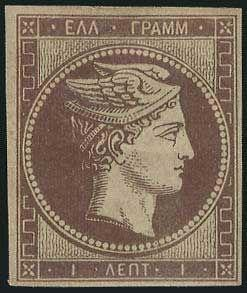
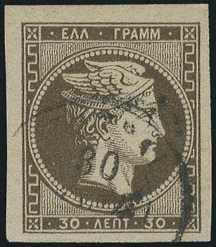

{kind=link}



1861 Paris print, usually cancelled with a numeral dot cancel, rarer with towncancels. The 10 l has a control number at the back that is 8 mm high (all other other control numbers for all other issues are 6 1/2 mm high).
Return To Catalogue - Greece Large Hermes Head issues (1861) - Cancels on the first issues
Note: on my website many of the
pictures can not be seen! They are of course present in the
catalogue;
contact me if you want to purchase the catalogue.
Some misprints exist concerning these backside values, missing numbers, inverted numbers etc.
Note on this issue: specialists distinguish a great number of printings, plates, numbers on the backside, etc. This gives rise to a considerable amount of confusion and it is a field for the specialist. The following printings etc. can be distinguished:
1861 Paris print (clear impression)
Without numerals on the backside: 1 l brown, 2 l brown, 5 l green,
20 l blue, 40 l lilac on blue, 80 l red
With numerals (control number) on the backside: 10 l orange (on bluish paper)

1861 Paris print, usually cancelled with a numeral dot cancel,
rarer with towncancels. The 10 l has a control number at the back
that is 8 mm high (all other other control numbers for all other
issues are 6 1/2 mm high).
1861-62 Athens provisional printings (on teinted paper, badly printed)
Without numerals: 20 l blue (RRR), 1 l, 2 l
With numerals: 5 l green, 10 l orange (on bluish paper), 20 l blue,
40 l lilac (bluish paper)


Athens provisional printing of 1861-1862.


1862-69 Consecutive Athens printings (first nicely printed then deteriorating)
Without numerals: 1 l brown, 2 l brown
With numerals: 5 l green, 10 l orange (on bluish paper), 20 l blue
40 l lilac (on bluish paper), 80 l red


Consecutive Athens printings
1867-69 Cleaned Plates
Without numerals: 1 l brown, 2 l brown
With numerals: 5 l green, 10 l orange (on bluish paper), 20 l blue
40 l lilac (on bluish paper), 80 l red


Cleaned plates issue
1870 Special Athens printing
Without numerals: 1 l brown
With numerals: 20 l blue


Special Athens printing of 1870
1871-72 On thin transparent paper
Without numerals: 1 l brown, 2 l
With numerals: 5 l green, 20 l blue
40 l lilac (on bluish paper)

On thin paper


1871 printing
1871-76 On meshed paper (oily printing)
Without numerals: 1 l brown, 2 l brown
With numerals: 5 l green, 10 l orange (on bluish paper), 20 l blue
40 l olive-green to bronze to mauve (on bluish paper), 80 l red


On meshed paper
1876 Paris printing
30 l brown, 60 l green on green

1876 Paris printing
1876-77 Athens printing (creamy paper)
30 l brown, 60 l green


1876 Athens printing
1875-80 On Cream paper (Athens printing)
Without numerals: 1 l brown, 2 l brown, 5 l green, 10 l orange, 20 l blue,
20 l red, 30 l blue, 40 l brown
With numerals: 5 l green, 10 l orange, 20 l blue, 40 l lilac


Cream paper Athens printing


1880 Athens printing
1891(?) Rouletted and perforated 11 1/2
Some stamps exist without roulleted or normal perforation
Perforated stamps could be made by the public (mainly stamp collectors and dealers) by making use of a perforation machine that was available in the general post office in Athens.
Interested people are referred to more specialized catalogues, such as Vlastos or Hellas.
Click here for forgeries of the
Greece Large Hermes Head forgeries, part 1
Spiro and other simple forgeries
Greece Large Hermes Head forgeries, part
2; Oneglia and Sperati
Greece Large Hermes Head forgeries, part
3; Fournier
Greece Large Hermes Head forgeries, part
4; Imperato
and here for cancels on the first issues.
{kind=link}